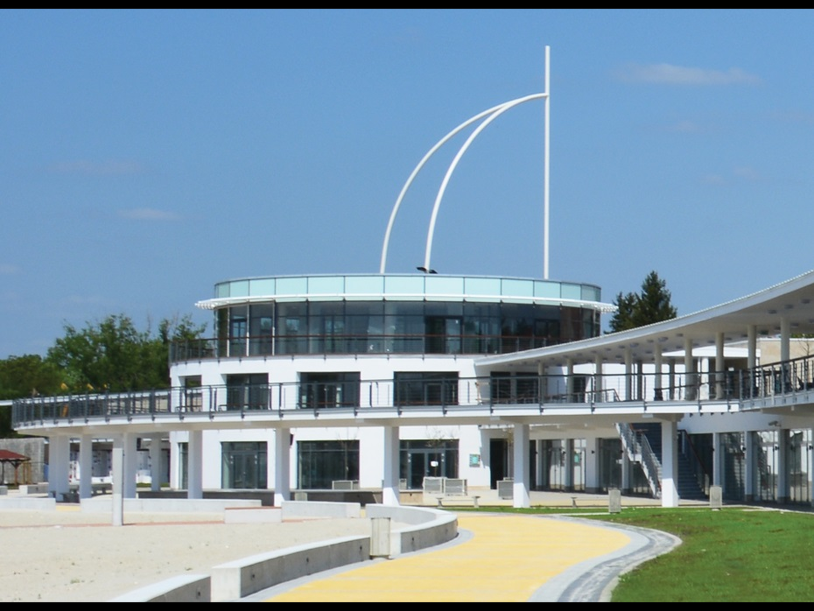

Helyszín
Kiemelt 1328-as Üdülőház és Kemping-Camping Pákász
A szálláshely Agárdon, a Velencei tavat megkerülő kerékpár út, valamint a Park strand és a Madárvárta természetvédelmi terület között, gyönyörű környezetben helyezkedik el. A kemping gondozott kertjében faházakban, kőházakban több osztály, vagy akár egy nagyobblétszámú csoport ( összesen 102 fő ) elhelyezésére is lehetőség van. A szálláshely ingyenes strandbelépőt biztosít.
Szállás félpanzióval: 7.390 Ft/fő/éj 546.860Ft 37fő/2éj 2 kisérő számára ingyenes
Szállás szolgáltatásai:
- Beltéri játékok
- Bográcsozási lehetőség
- Étterem
- Konyha használat
- Különterem
- Parkoló
- Terasz
- Tűzrakóhely, egyéb sütési lehetőség
- Udvar
- Wifi
Odaút
Debrecen-582 TOKAJ INTERCITY-Kőbánya-Kispest-3524 G43 SZEMÉLYVONAT-Agárd kisérő-4935Ft (2db=9.870Ft) diák-2.220Ft (37db=82.140Ft)
Visszaút
Agárd-3524 G43 SZEMÉLYVONAT-Kőbánya-Kispest-582 TOKAJ INTERCITY-Debrecen kisérő-3699Ft (2db=7.398Ft) diák-2.725Ft (37db=100.825Ft)
Egy főre jutó költség: 22.200 Ft
Összes költség: 821.093 Ft
Érkezés-távozás
A szálláshelyet érkezéskor 14 órától lehet elfoglalni és távozáskor 10 óráig kell elhagyni.
Szobák
Döntően emeletes ágyak találhatóak a szobákban. A nagy faházban külön női-férfi vizesblokk 3-3 zuhanyzóval, 3-3 wc-vel és 2-2 mosdóval.
Étkezés
Egy teljesen felszerelt önellátó konyhával, 60 férőhelyes fedett étkezővel rendelkezik a szálláshely. Reggelit, ebédet, vacsorát a csoportok részére a szálláshelyen biztosítanak.
Programlehetőségek:
- Velence tavat megkerülő kerékpár út
- Expediciós kenutúrák
- Hajókirándulás Pákozdra
- Rönkvár
- Gárdonyi emlékház
- Strandolási lehetőség
- Velencei hegység túra
- Pákozd Ingó kövek
- Bence hegyi kilátó
Kirándulási és programlehetőségek:
Első nap
- 8:07-Vonattal indulás Debrecenből
- Szállás elfoglalása
- Szabad Foglalkozás
- 6:00-Vacsora a szálláson
Második nap
- 8:30-Reggeli a szálláson
- 10:00-Áthajózás Velencébe (Az agárdi hajókikötő a Pákász tanyától pár perces sétára található, ahonnan rendszeres hajójáratok indulnak a Velencei-tó felfedezésére.)
- A Velence Korzó körbejárása
- Ebéd(Sakáltanya Falatozó és Pizzéria Velence)-2.000Ft/fő
- Visszahajózás Agárdba
- Szabad foglalkozás
- 6:00-Vacsora a szálláson
Harmadik nap
- 8:30-Reggeli a szálláson
- 10:00-ig szállás elhagyása